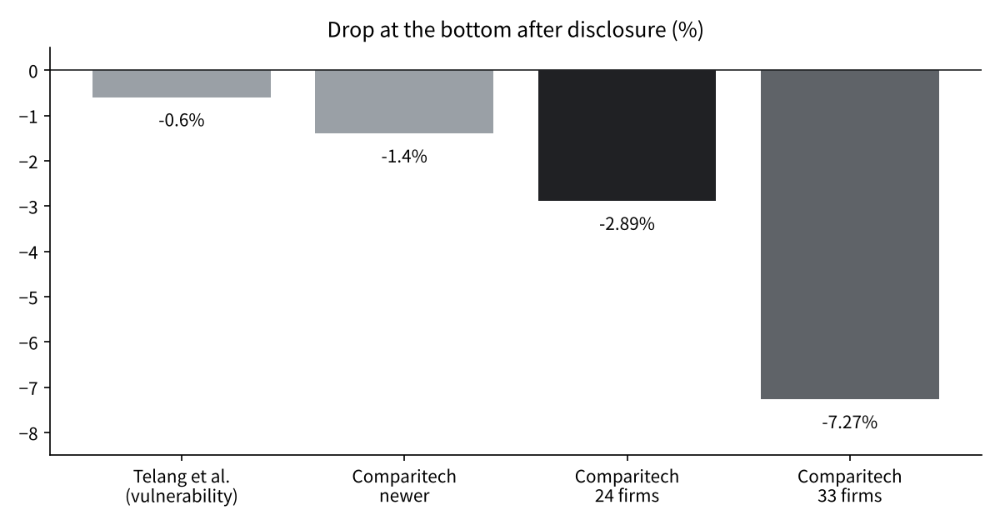
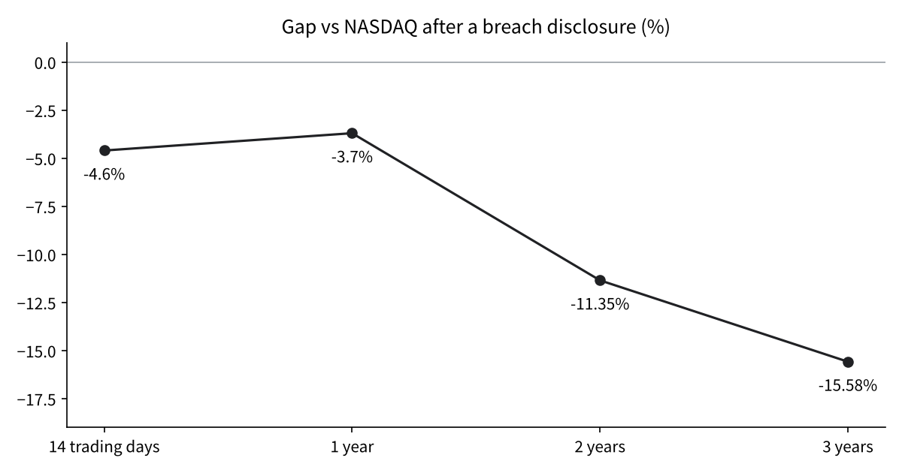

Keisei's 3.37 million records and KADOKAWA's ransomware: how far do share prices fall after a company discloses a cyberattack, and how many days until they recover?
Late on November 11, Japan's Keisei Skyliner reservation system was breached, and up to about 3.37 million personal records may have leaked.
In Japan, too, disclosures of unauthorized access are no longer rare: hijacked brokerage accounts, ransomware shutdowns, and customer data leaks.
The question of this article is how much the share price of a listed company falls after it discloses unauthorized access, how many days it takes to recover, and whether the answer differs by type of attack.

- After a data breach disclosure, share prices fall by a few percent on average and bottom out about two weeks later. In an analysis of 24 US-listed companies, the drop was −2.89% after 14 trading days.
- Short-term drops often recover within one to two months, but the gap to the index can persist; one study found −15.58% versus the NASDAQ after three years.
- Ransomware that halts operations shows up in revenue and profit before it shows up in the share price. At KADOKAWA, the damage remained on the income statement through lost sales and an extraordinary loss.
Question and background
Unauthorized access means entering someone else's system without permission. This article splits it into three types. Type 1 is a data breach (customers' names and contact details leak), Type 2 is a system shutdown (ransomware encrypts data and stops operations), and Type 3 is account takeover (users' accounts are used without permission).
Ransomware is an attack that encrypts data and demands money in exchange for restoring it. A cumulative abnormal return is the sum, over several days, of the share price change that the overall market cannot explain.
Three reasons a share price may fall: the cost of compensation and recovery, customers leaving, and fines from regulators. Which cost is largest depends on the type.
Data and method
This article does not collect new price data. It rearranges, by type, the figures from published academic research and surveys, company disclosures, and official statistics.
For Type 1, I use the study by Acquisti and colleagues (79 data breaches at US-listed companies) and the Comparitech analysis (24 companies, mostly on the New York Stock Exchange). The latter uses the price on the day before disclosure as the base and measures the gap to the NASDAQ over the same period.
For Type 2, I use KADOKAWA's disclosures for the fiscal year ending March 2025 and the list of extraordinary losses compiled by Trend Micro. For Type 3, I use the 2025 statistics on brokerage account intrusions published by Japan's Financial Services Agency.
On differences by attack type, I refer to reviews of earlier research that regressed share price reactions on incident characteristics.
I narrowed the comparison to three measures: days to the bottom, the size of the drop at the bottom (including the gap to the index), and days to return to the pre-disclosure level. Because few studies cover the share prices for Types 2 and 3, I look at revenue, extraordinary losses, and the size of the damage instead.

Results
For Type 1 data breaches, a statistically significant drop appears on the day of disclosure. Acquisti and colleagues reported that the effect grows into the following day, then shrinks and loses significance.
Among Comparitech's 24 companies, the bottom came 14 trading days after disclosure, with an average drop of −2.89% and −4.6% versus the NASDAQ. Within about a month, the gap to the NASDAQ narrowed.
Another version of the same survey, covering 33 companies, found the bottom at 14 trading days with a larger average drop of −7.27%. A newer version found the bottom 41 days after disclosure at −1.4%, with prices returning to their pre-disclosure level after 53 days on average. The figures vary widely by version, but the shape is shared: a bottom within two weeks to a month and a half, and recovery within one to two months.
Sectors differed too. In Comparitech's analysis, the largest immediate drop was in finance, while technology companies fell for longer, bottoming at −5.3% versus the NASDAQ after 40 trading days. In the newer version, healthcare companies fell the most, followed by finance and manufacturing.
Over longer periods, however, the gap remained. After one year it was −3.7% versus the NASDAQ, after two years −11.35%, and after three years −15.58%.
| Period | Average share price | Versus NASDAQ |
|---|---|---|
| 14 trading days (bottom) | −2.89% | −4.6% |
| 1 year | +8.53% | −3.7% |
| 2 years | +17.78% | −11.35% |
| 3 years | +28.71% | −15.58% |
For Type 2 system shutdowns, the damage shows up in profit and loss before the share price. KADOKAWA's video services and more were down for about two months after the June 2024 ransomware attack; web business sales fell by about 3.9 billion yen ($24.4 million) and publishing by about 3.6 billion yen ($22.5 million). For the fiscal year ending March 2025, it expected an extraordinary loss of 2.4 billion yen ($15.0 million). A leak of personal data for about 250,000 people was also confirmed, so Types 1 and 2 overlapped.
The retailer Izumi booked an extraordinary loss of 1.0 billion yen ($6.3 million), and its net profit for the following half-year fell 22% from a year earlier. Here the damage did not end as a one-off cost; it reached customer traffic. The logistics company Kantsu also booked about 0.99 billion yen ($6.2 million) in losses related to an attack.
The cost of Type 2 is not limited to the ransom. In Sophos's 2024 survey, organizations that paid paid $2 million on average, and the average recovery cost excluding the ransom was $2.73 million. Japan's National Police Agency received 114 ransomware damage reports in the first half of 2024.
Type 3 account takeover harms users rather than the company. According to the Financial Services Agency, January to June 2025 saw 12,758 cases of unauthorized access and 7,139 unauthorized trades, with trading worth about 571 billion yen ($3.57 billion). By month, cases surged from March, and April had the most unauthorized trades at 2,932. In most cases, login details were stolen through fake sites, and the attackers sold the victims' holdings and bought small-cap stocks.
For Type 3, I could not find research comparing how the damage showed up in brokerages' share prices. The burden on the company changes greatly depending on who pays compensation.

Sensitivity analysis
Using the figures above, I estimated the loss of market value at the bottom for a company worth 100 billion yen ($626 million) that discloses a data breach, under three assumptions. The drops are −0.6% from Telang and colleagues, −2.89% from Comparitech's 24 companies, and −7.27% from the 33-company version.
| Assumption | Drop at bottom | Loss of market value | Time to recover |
|---|---|---|---|
| Small (−0.6%) | −0.6% | 0.6 billion yen ($3.8 million) | A few days |
| Medium (−2.89%) | −2.89% | 2.89 billion yen ($18.1 million) | About a month |
| Large (−7.27%) | −7.27% | 7.27 billion yen ($45.5 million) | One to two months |
Moving the assumed drop by one percentage point moves the loss by 1 billion yen ($6.3 million). Under every assumption, the figure reaches the same order of magnitude as KADOKAWA's lost sales (several billion yen). The short-term fall in the share price and the damage on the income statement look comparable in size.
Discussion
There are opposing views. Kannan and colleagues did not find a significant drop after security breach announcements. In another version of the Comparitech analysis, companies with larger breaches outperformed the market six months later.
Company size matters as well. Reviews of earlier research cite several results showing that smaller companies fall more. The sensitivity of the leaked data (such as medical or financial data) and the number of records are also named as factors that deepen the drop. In the study by Acquisti and colleagues, the effect became significant for incidents affecting more than 100,000 people.
How a company discloses also matters. In the reviews, companies that notified customers and the public quickly had significantly positive cumulative abnormal returns, while those that disclosed more details of the event had negative ones. Notifying quickly and deciding how much to write are treated as separate decisions.
For announcements of software vulnerabilities, Telang and colleagues reported an average loss of 0.6% of market value, and the reaction was positive for companies that released patches. Showing a way to fix the problem softens the fall.
There are three limits. First, I do not have recent research on Japanese listed companies collected with the same method. Second, the Comparitech analysis is not an academic paper and covers only 24 to 34 companies. Third, the long-term gap mixes in factors other than the breach.
The benchmark for checking this answer is to measure the gap to TOPIX at 14 trading days and at one year for at least 20 Japanese listed companies, matched by disclosure date and industry. If the result falls between −2% and −5%, this article's conclusion also holds for Japan.
Conclusion
After a data breach disclosure, share prices bottom out in about two weeks and fall by a few percent. Short-term drops often recover within one to two months, but in some cases a gap to the market persists over long periods.
Damage of the type that halts operations appears in revenue and extraordinary losses before the share price. For investors, the following earnings figures show the size of the damage better than the drop on the day of disclosure. For Type 3 account takeover, the impact on the company changes greatly depending on how the burden of compensation is decided.
How I see it
I live in Japan. At my restaurant we take reservations on paper, and my shared office does not keep member data on its own systems. If you do not hold the data, Type 1 damage is less likely.
Even if one of my holdings discloses unauthorized access, I will not sell on the share price drop alone. What I look at is how much revenue and profit went missing in the following earnings.
I place stock orders with Nomura Securities only by phone. I keep my banking and brokerage with large firms and have turned on every two-factor authentication I can. I think that deciding where to keep things and how to handle them works better than adding more tools.
Sources
- Alessandro Acquisti, Allan Friedman, Rahul Telang, "Is There a Cost to Privacy Breaches? An Event Study," ICIS 2006 Proceedings (2006) https://aisel.aisnet.org/icis2006/94
- Comparitech (Paul Bischoff), "How data breaches affect stock market share prices" https://comparitech.com/blog/data-breach-share-price-analysis
- Credit Union Times, "Breaches Affect Short-Term Share Prices; Long Term, Not So Much," Sep 10, 2018 (figures from Comparitech's 2018 version) https://cutimes.com/2018/09/10/breaches-affect-short-term-share-prices-long-term
- Threatpost, "Data Breaches Batter Stock Prices at Public Companies, For Months" (figures from the 33-company version) https://threatpost.com/data-breaches-batter-stock-price/150088
- Review of earlier research (Telang and Wattal 2007, Cavusoglu et al. 2004, Gordon 2011 and others), HICSS paper https://core.ac.uk/download/301371443.pdf
- Review including Kannan, Rees, Sridhar (2007): The Impact of Federal and State Notification Laws on Security Breach Announcements (2014) https://core.ac.uk/download/301376992.pdf
- Impact of the ransomware attack on KADOKAWA's results (fiscal year ending March 2025) https://rocket-boys.co.jp/?p=16956
- Trend Micro, extraordinary losses caused by ransomware attacks, Aug 16, 2024 (updated Oct 28, 2024) https://trendmicro.com/ja_jp/jp-security/24/h/breaking-securitynews-20240816-02.html
- Brokerage account intrusions published by the Financial Services Agency (January to June 2025) https://rocket-boys.co.jp/?p=19693
- Sophos, "The State of Ransomware 2024" figures (quoted by Business Journal) https://biz-journal.jp/ai/pickup-news/post_337273.html
- National Police Agency, ransomware damage reports in the first half of 2024 (quoted by Advertimes) https://www.advertimes.com/?p=482233
- News On Japan (TBS), "Keisei Skyliner Reservation System Hacked," Nov 16, 2026 https://newsonjapan.com/article/151383.php
Charts and illustrations by YUKI CAPITAL
I record my daily numbers and decisions on X.